01ค้นหาและกรองตัวละคร
รวมบุคคลสำคัญ 110 คนจากทุกฝ่าย ทั้งวีรบุรุษ ผู้ทรยศ และเผ่าต่างดาว ทุกคนมีชื่อ คำอ่าน บทบาท และสถานะล่าสุด พิมพ์ชื่อ (ไทยหรืออังกฤษ) หรือกดตัวกรองได้เลย
110 จาก 110 คน
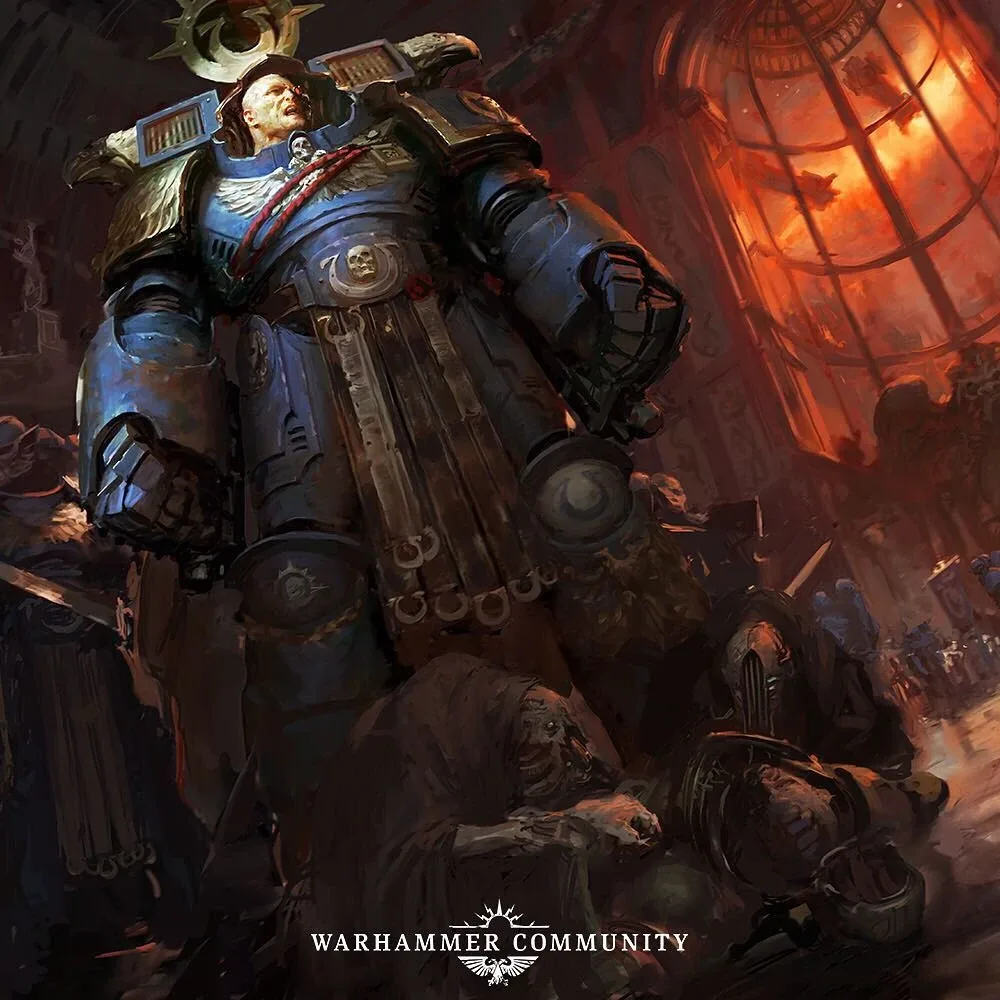
Marneus Calgar (มาร์เนียส คาลการ์)
Chapter Master แห่ง Ultramarines · Lord of Macragge
Space Marines · Ultramarines
ผู้นำ Ultramarines ผู้ป้องกัน Macragge จาก Hive Fleet Behemoth เป็น Firstborn คนแรกที่ผ่านพิธี Rubicon Primaris จนกลายเป็น Primaris และเป็นผู้เรียกรวมกองทัพใน Operation Imperator บน Armageddon
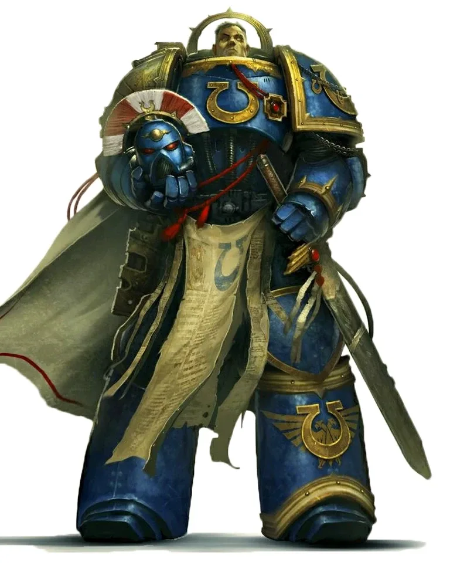
Cato Sicarius (คาโต ซิคาริอัส)
ผู้บัญชาการ Victrix Honour Guard
Space Marines · Ultramarines
อดีตกัปตัน 2nd Company ของ Ultramarines นักรบที่หยิ่งแต่เก่งกาจ ถูกมองว่าเป็นทายาทของ Calgar ปัจจุบันเป็น Primaris และคุมหน่วยองครักษ์ Victrix Guard
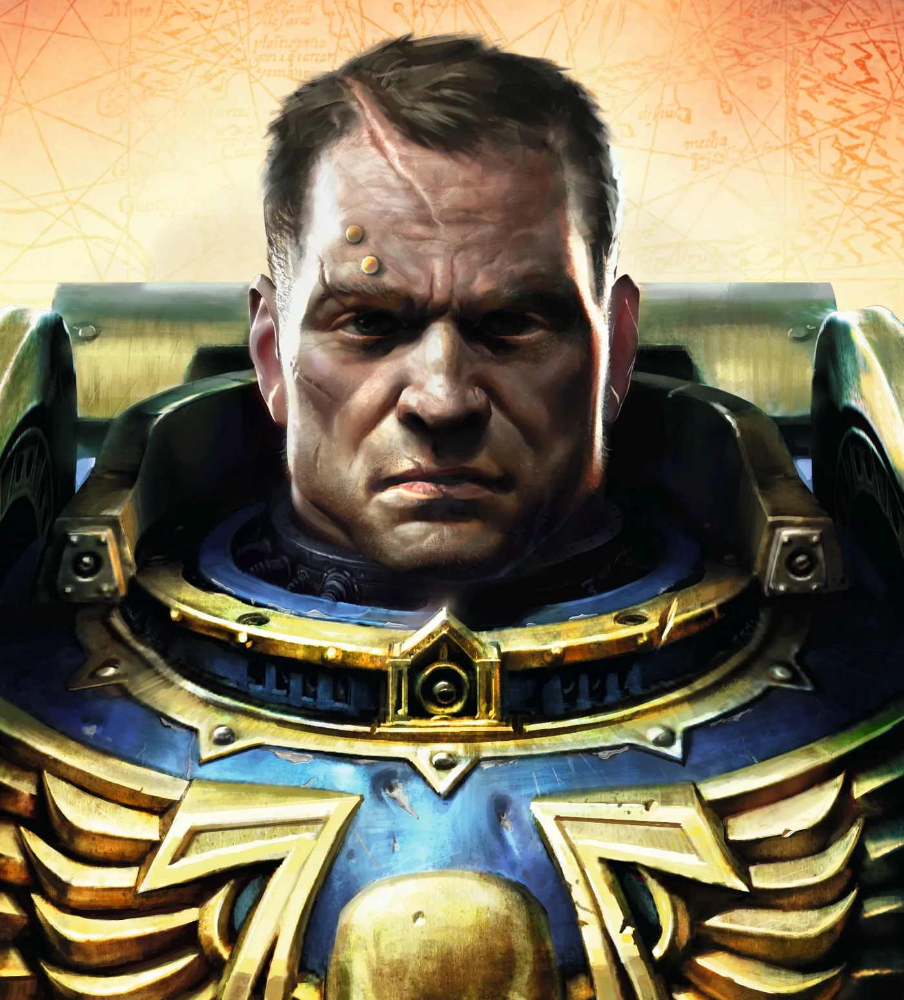
Demetrian Titus (เดเมทเรียน ไททัส)
กัปตัน 2nd Company · Warden of Ultramar
Space Marines · Ultramarines
ตัวเอกของเกม Space Marine ทั้งสองภาค สู้กับ Orks บน Graia จนถูก Inquisition สงสัยว่าเป็นคนนอกรีต ต่อมาผ่าน Rubicon Primaris กลับมาเป็นกัปตัน 2nd Company อีกครั้ง
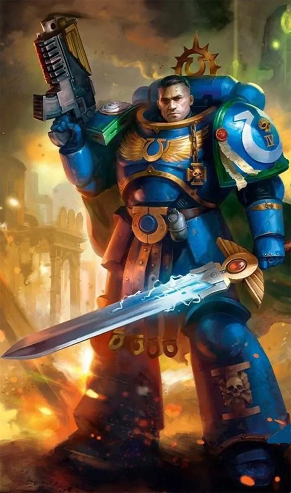
Uriel Ventris (ยูเรียล เวนทริส)
กัปตัน 4th Company
Space Marines · Ultramarines
กัปตันหนุ่มชาว Calth ตัวเอกของนิยายชุด Ultramarines เคยถูกเนรเทศเพราะคิดนอกตำรา Codex Astartes และต้องทำภารกิจไถ่โทษในดาว Medrengard ของ Iron Warriors
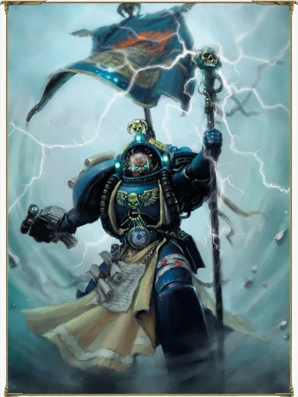
Varro Tigurius (วาร์โร ทิกูเรียส)
Chief Librarian แห่ง Ultramarines
Space Marines · Ultramarines
ผู้มีพลังจิตที่มองเห็นอนาคตได้ คำเตือนของเขาช่วยให้ Ultramarines เตรียมพร้อมรับ Hive Fleet Behemoth ได้ทันเวลา
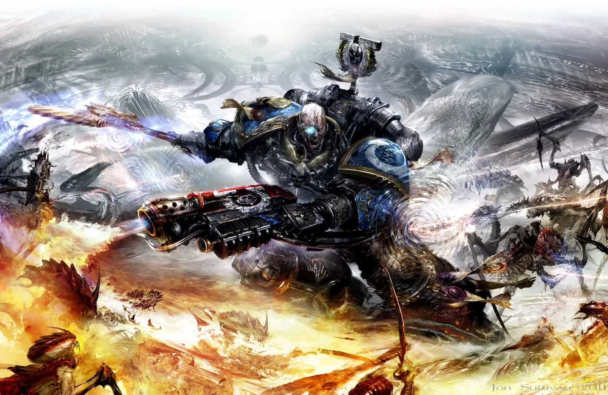
Ortan Cassius (ออร์ทัน แคสเซียส)
Master of Sanctity (หัวหน้า Chaplain)
Space Marines · Ultramarines
Chaplain ที่อาวุโสที่สุดของ Ultramarines ร่างกายเต็มไปด้วยชิ้นส่วนกลไกจากการรบกับ Tyranids มาหลายศตวรรษ เกลียด Tyranids อย่างที่สุด
Commander Dante (ดันเต้)
Chapter Master แห่ง Blood Angels · Lord Regent of Imperium Nihilus
Space Marines · Blood Angels
Space Marine ที่อาวุโสที่สุดคนหนึ่งที่ยังมีชีวิต เป็น Chapter Master มาราว 1,100 ปี สวมหน้ากากทองคำ Death Mask of Sanguinius นำการป้องกัน Baal จาก Tyranids และถูกแต่งตั้งให้ปกครอง Imperium Nihilus ภายหลังผ่าน Rubicon Primaris เป็น Primaris
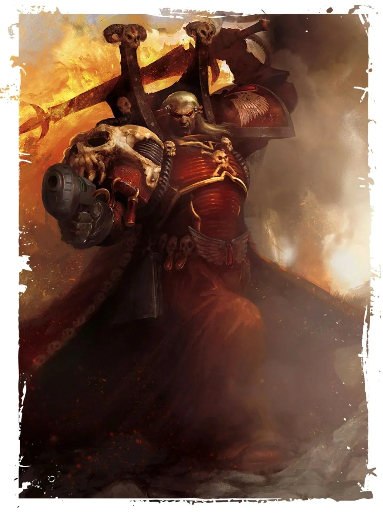
Mephiston (เมฟิสตัน)
Chief Librarian แห่ง Blood Angels · Lord of Death
Space Marines · Blood Angels
เดิมชื่อ Calistarius เป็นคนเดียวที่เอาชนะ Black Rage ได้ถึงสองครั้งและกลับมามีสติ เป็นผู้มีพลังจิตที่แกร่งที่สุดคนหนึ่งของจักรวรรดิ
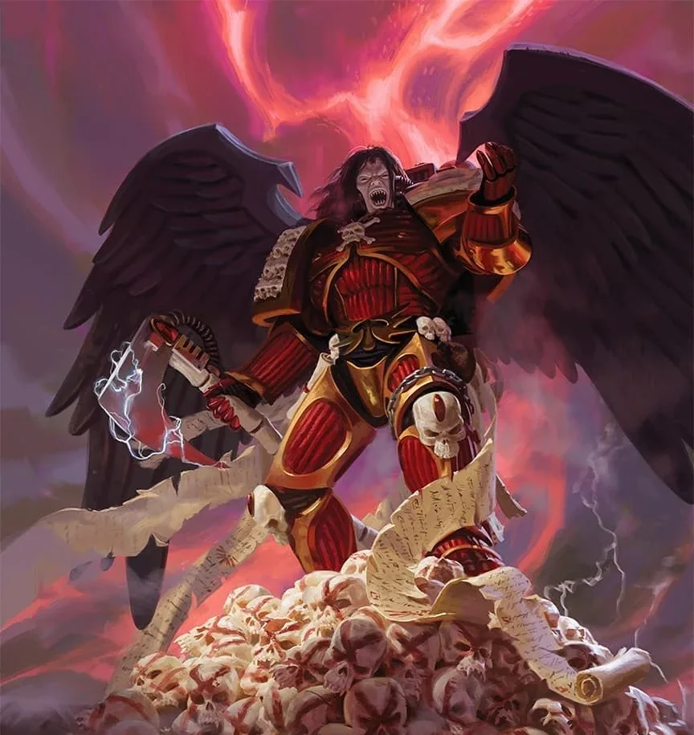
Astorath the Grim (แอสทอรัธ เดอะ กริม)
High Chaplain · Redeemer of the Lost
Space Marines · Blood Angels
มีหน้าที่อันแสนหนักคือมอบ 'ความสงบ' (ความตาย) ให้พี่น้องสาย Sanguinius ที่ตกอยู่ใต้ Black Rage จนไม่มีทางกลับ
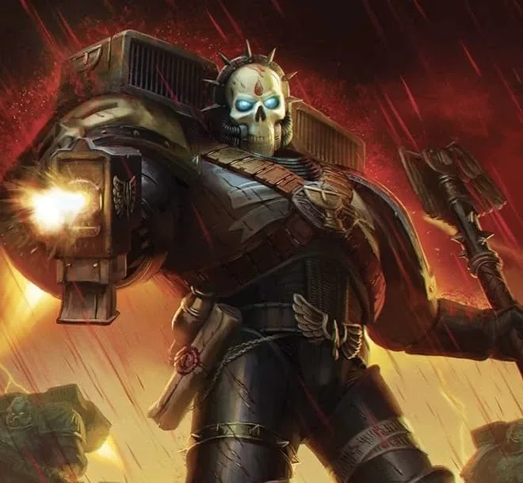
Lemartes (เลมาร์เตส)
Chaplain ผู้ดูแล Death Company
Space Marines · Blood Angels
Chaplain ที่ติด Black Rage แต่ยังควบคุมตัวเองได้ จึงนำหน่วย Death Company — ทหารที่คลั่งจาก Black Rage — บุกเข้าหาศัตรู
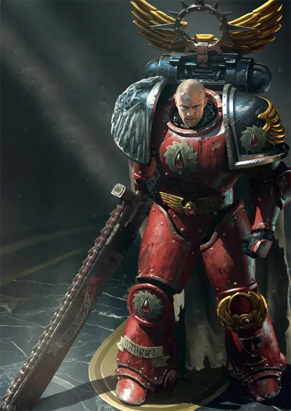
Gabriel Seth (กาเบรียล เซธ)
Chapter Master แห่ง Flesh Tearers
Space Marines · Blood Angels
ผู้นำ Chapter สาย Blood Angels ที่ถูก Black Rage กัดกินหนักที่สุดจนเกือบล่มสลาย พยายามรักษา Chapter ให้อยู่รอดด้วยวินัยที่เข้มงวด
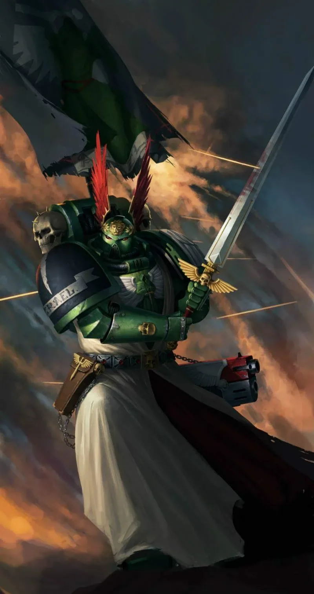
Azrael (อัซราเอล)
Supreme Grand Master แห่ง Dark Angels
Space Marines · Dark Angels
ผู้นำ Dark Angels และ 'Keeper of the Truth' ผู้เก็บความลับเรื่อง Fallen Angels ภายหลังผ่าน Rubicon Primaris และได้พบกับ Lion El'Jonson ที่กลับมา
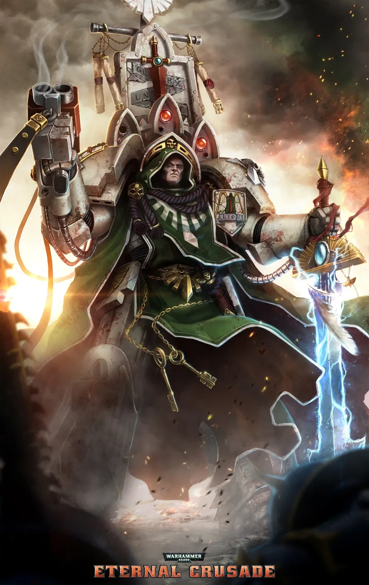
Belial (เบเลียล)
Grand Master แห่ง Deathwing (1st Company)
Space Marines · Dark Angels
ผู้นำหน่วย Deathwing ในชุด Terminator สีกระดูก หน่วยยอดฝีมือที่ร่วมไล่ล่า Fallen Angels
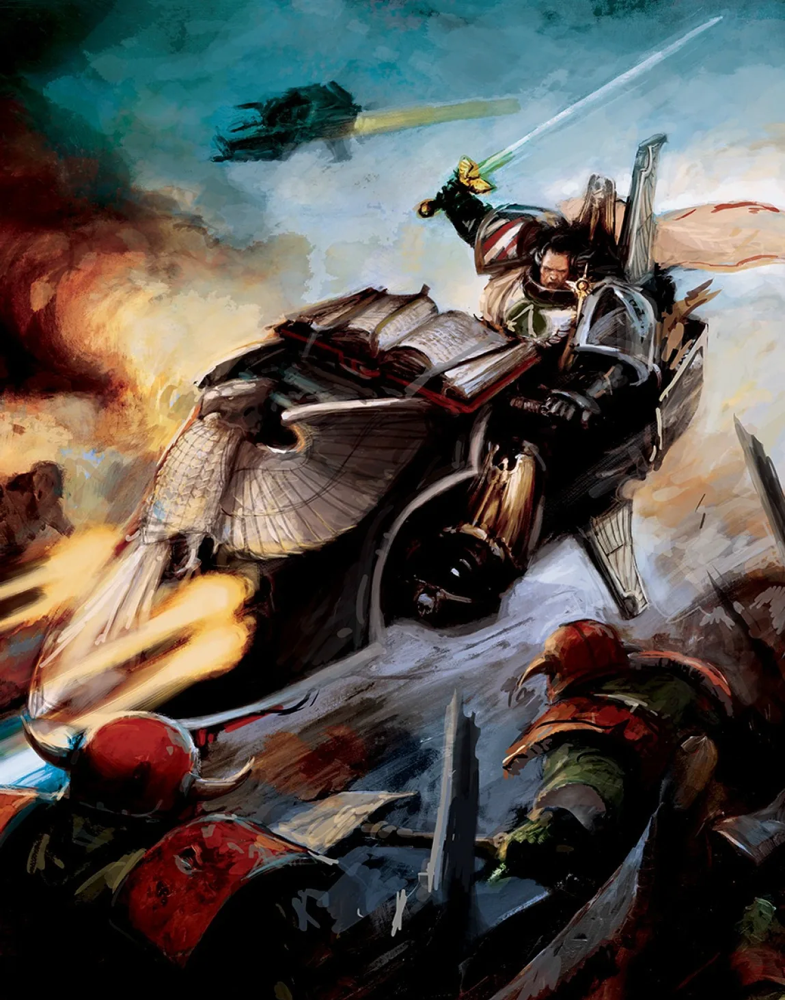
Sammael (แซมมาเอล)
Grand Master แห่ง Ravenwing (2nd Company)
Space Marines · Dark Angels
ผู้นำหน่วยความเร็วสูง Ravenwing ที่ขี่ยานและมอเตอร์ไซค์ นำการไล่ล่า Fallen Angels โดยตรง
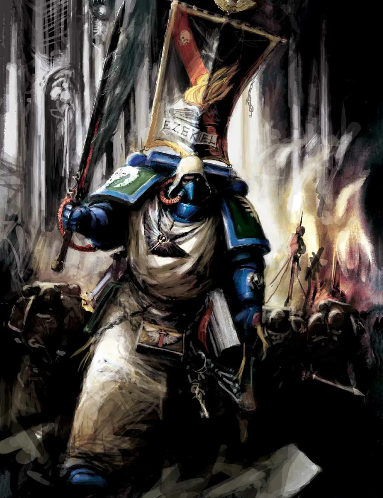
Ezekiel (เอเซเคียล)
Grand Master of Librarians
Space Marines · Dark Angels
หัวหน้าผู้มีพลังจิตของ Dark Angels ใช้พลังค้นหาและตัดสินความภักดีของผู้ที่ถูกสงสัย
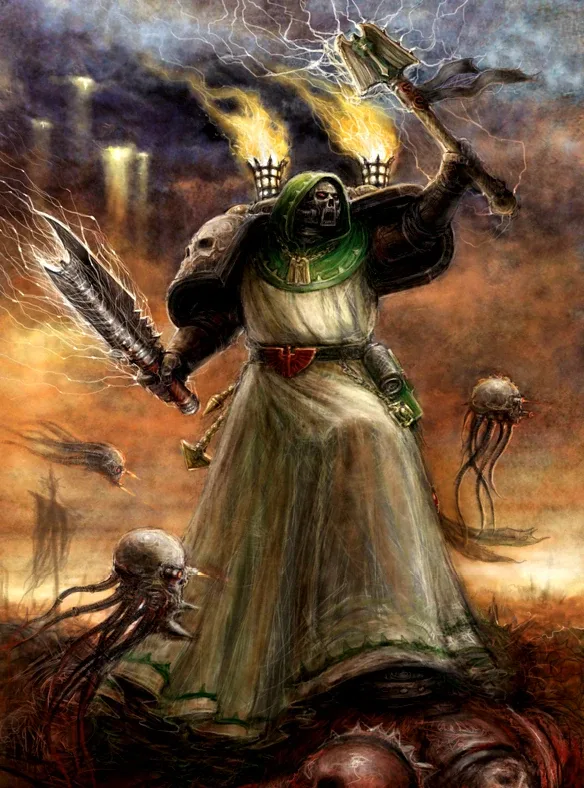
Asmodai (แอสโมได)
Master Interrogator-Chaplain
Space Marines · Dark Angels
ผู้สอบสวน Fallen Angels ที่ถูกจับได้ พยายามบังคับให้พวกเขาสำนึกผิดก่อนตาย — ตลอดชีวิตทำสำเร็จเพียงไม่กี่ครั้ง
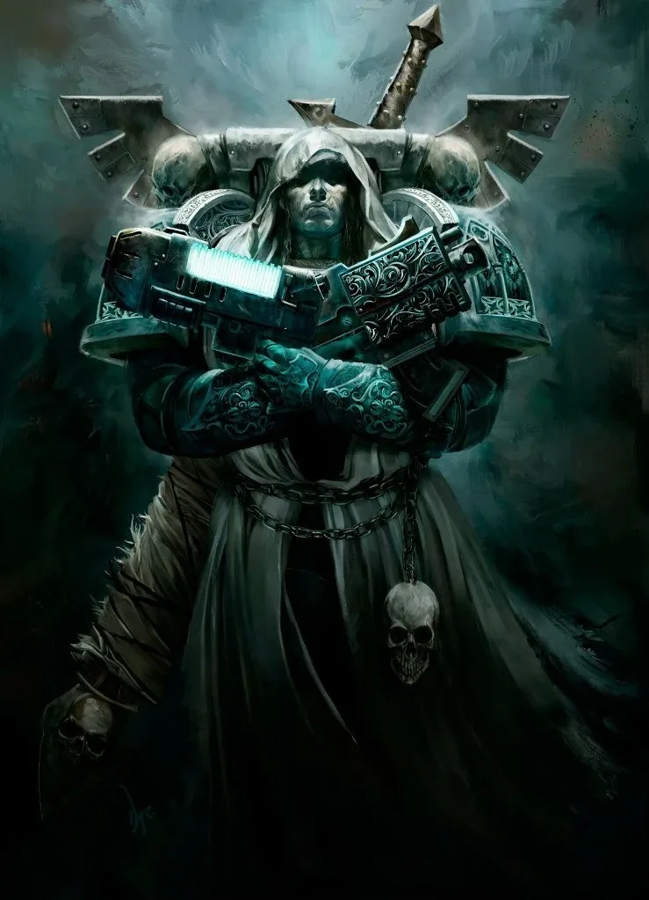
Cypher (ไซเฟอร์)
Fallen Angel ลึกลับ
Fallen Angels · Dark Angels
Fallen Angel ที่ไม่มีใครรู้เป้าหมายแท้จริง ปรากฏตัวในสมรภูมิทั้งช่วยและขวาง แต่ละครั้งทิ้งปริศนาไว้ Dark Angels ไล่ล่าเขามาหมื่นปี มีทฤษฎีว่าเขาอาจเป็นคนจากยุค Heresy เอง
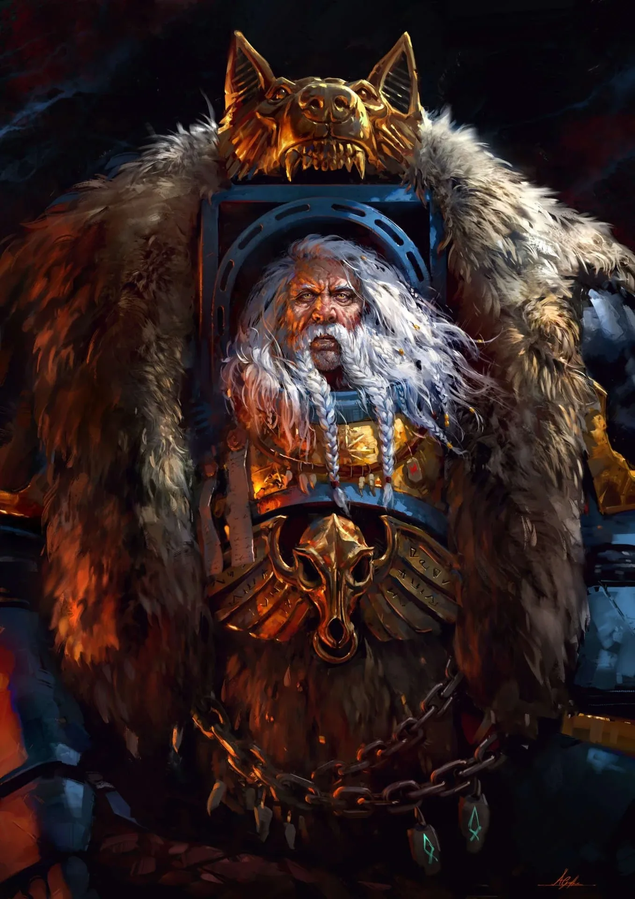
Logan Grimnar (โลแกน กริมนาร์)
Great Wolf (Chapter Master) แห่ง Space Wolves
Space Marines · Space Wolves
ผู้นำ Space Wolves มากว่า 500 ปีจากอายุ 700 ปี ดื้อรั้นแต่ภักดีสุดใจ นั่งรถศึก Stormrider ลากโดยหมาป่ายักษ์
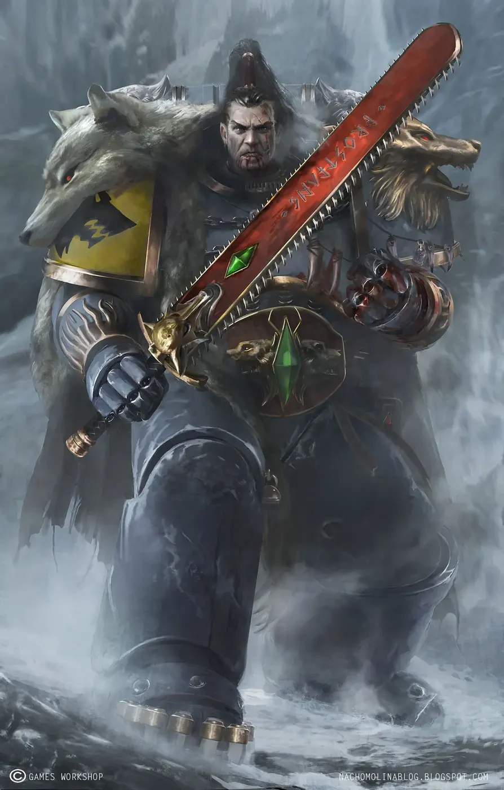
Ragnar Blackmane (แร็กนาร์ แบล็กเมน)
Wolf Lord ที่อายุน้อยที่สุด
Space Marines · Space Wolves
ผู้นำ Great Company ที่ถนัดบุกด้วย Drop Pod ตัดหัว Ghazghkull ได้ที่ Krongar (แม้ภายหลังจะถูกต่อหัวกลับมา) ปัจจุบันเป็น Primaris
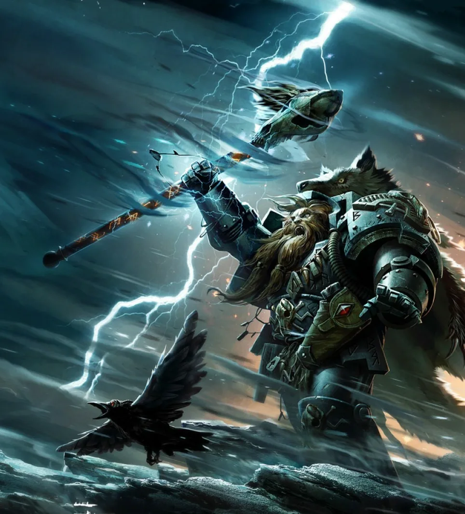
Njal Stormcaller (เนียล สตอร์มคอลเลอร์)
Rune Priest ที่แกร่งที่สุด
Space Marines · Space Wolves
ผู้มีพลังจิตแห่ง Space Wolves ที่เรียกพายุหิมะและสายฟ้าได้ ถูกเรียกว่า 'พายุที่เดินได้'
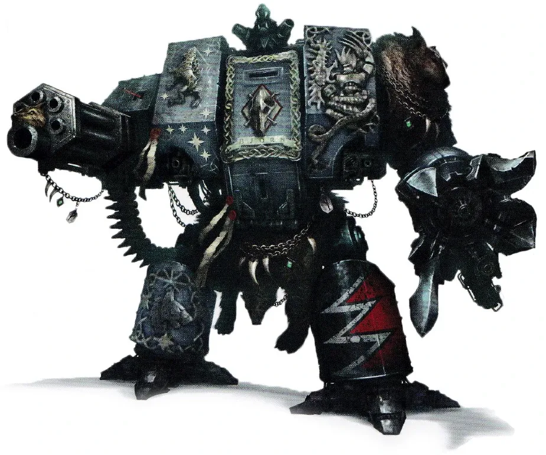
Bjorn the Fell-Handed (บยอร์น เดอะ เฟล-แฮนด์ด)
Dreadnought อายุหมื่นปี · อดีต Great Wolf
Space Marines · Space Wolves
Space Marine ที่อายุมากที่สุดที่ยังมีชีวิต เคยรบเคียงข้าง Leman Russ และจักรพรรดิในยุค Great Crusade ปัจจุบันอยู่ในร่าง Dreadnought
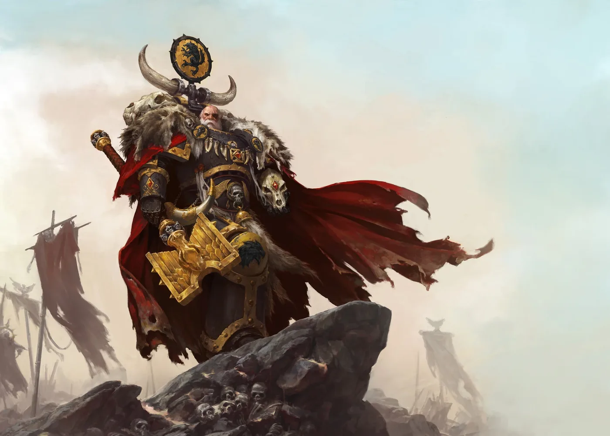
Ulrik the Slayer (อุลริก เดอะ สเลเยอร์)
Wolf High Priest
Space Marines · Space Wolves
Wolf Priest ผู้อาวุโสที่สุดที่ไม่ได้อยู่ในร่าง Dreadnought อายุมากกว่า Logan Grimnar ดูแลการทดสอบผู้สมัครและปกป้องเจเนซีด
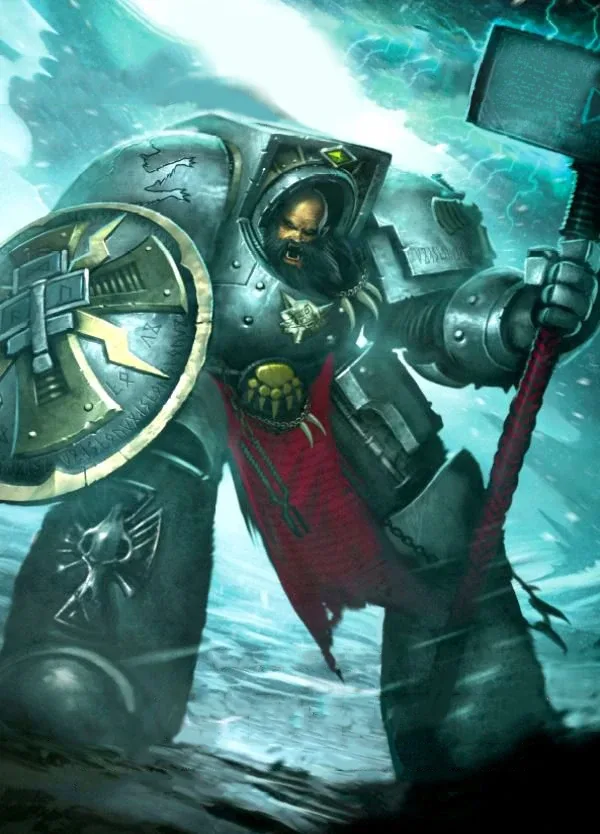
Arjac Rockfist (อาร์แจ็ก ร็อกฟิสต์)
แชมเปี้ยนของ Great Wolf
Space Marines · Space Wolves
อดีตช่างตีเหล็กแห่ง Fenris ร่างใหญ่ราวยักษ์ ใช้ค้อน Foehammer ปกป้อง Logan Grimnar
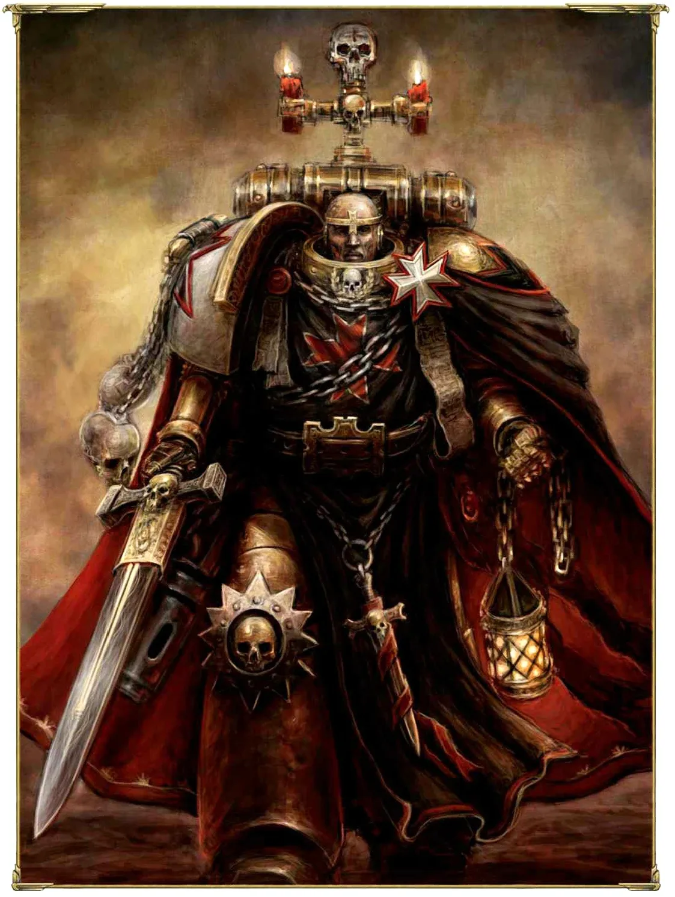
Helbrecht (เฮลเบรคท์)
High Marshal แห่ง Black Templars
Space Marines · Black Templars
ผู้บัญชาการกองเรือที่เก่งที่สุดใน Space Marines นำกองเรือทั้งหมดใน Third War for Armageddon ร่วมกับกองทัพเรือจนขับไล่กองเรือ Orks ได้
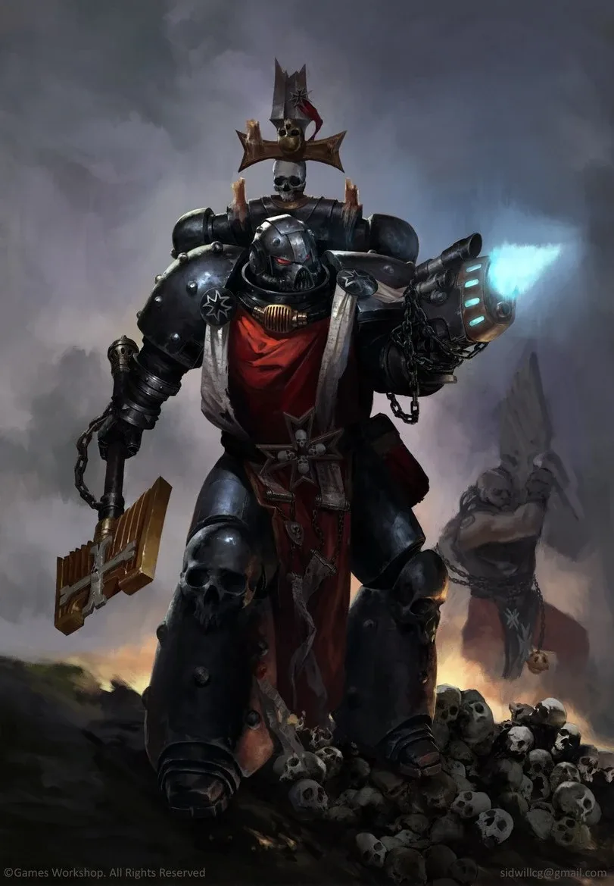
Merek Grimaldus (เมเรก กริมัลดัส)
Reclusiarch · Hero of Helsreach
Space Marines · Black Templars
Chaplain แห่ง Black Templars ผู้ยืนหยัดป้องกันวิหารใน Hive Helsreach บน Armageddon จนอาคารถล่มทับ แล้วปีนออกมาจากซากได้
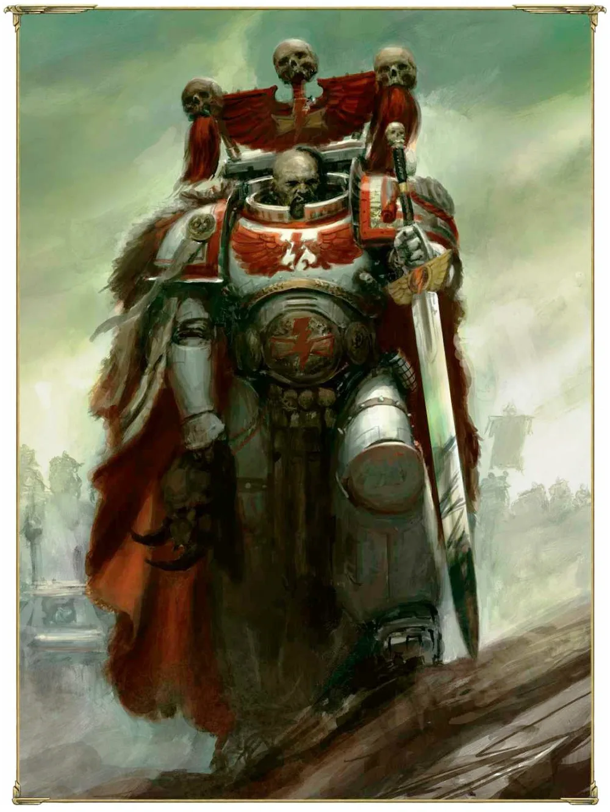
Kor'sarro Khan (คอร์ซาร์โร ข่าน)
Master of the Hunt แห่ง White Scars
Space Marines · White Scars
นักล่าผู้ห้าวหาญที่ได้รับมอบหมายให้ตามล่าศัตรูสำคัญของ Chapter และนำหัวกลับมา
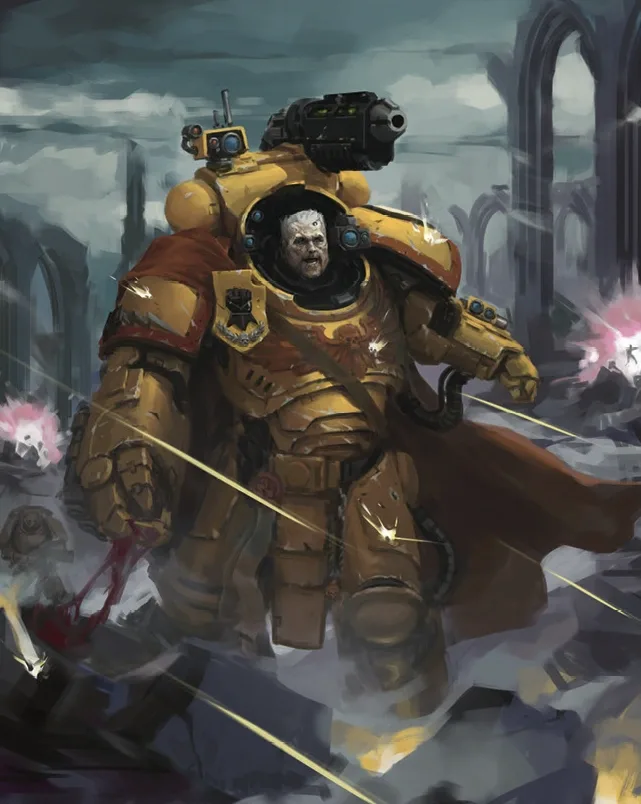
Tor Garadon (ทอร์ การาดอน)
กัปตัน 3rd Company แห่ง Imperial Fists
Space Marines · Imperial Fists
กัปตันที่รับใช้ยาวนานที่สุดของกองร้อยที่ 3 ผู้ถ่ายทอดคำสอนเรื่องความอดทนของ Rogal Dorn ในรูปแบบที่หนักหน่วงที่สุด
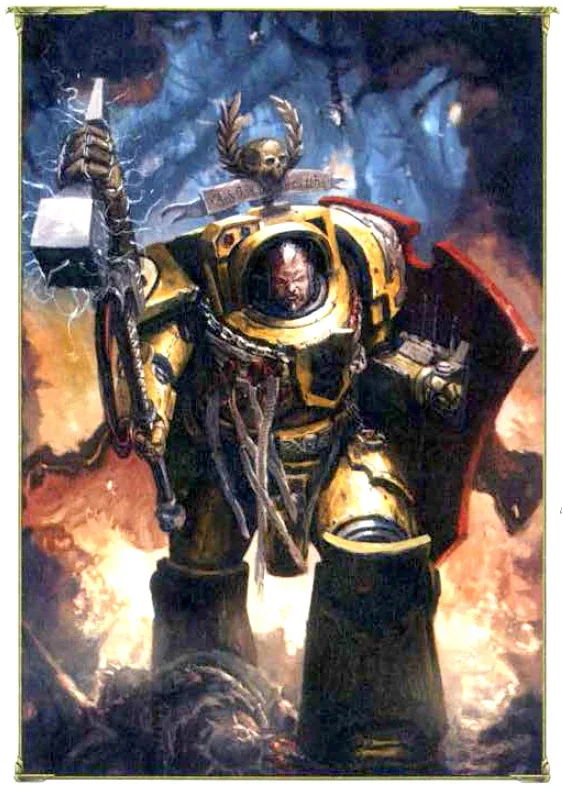
Darnath Lysander (ดาร์แนธ ไลแซนเดอร์)
กัปตัน 1st Company แห่ง Imperial Fists
Space Marines · Imperial Fists
ทหารผ่านศึกผู้ถือค้อน Fist of Dorn เคยถูก Iron Warriors จับทรมานนานหลายปีแต่หนีรอดมาได้ เกลียด Iron Warriors ยิ่งกว่าใคร
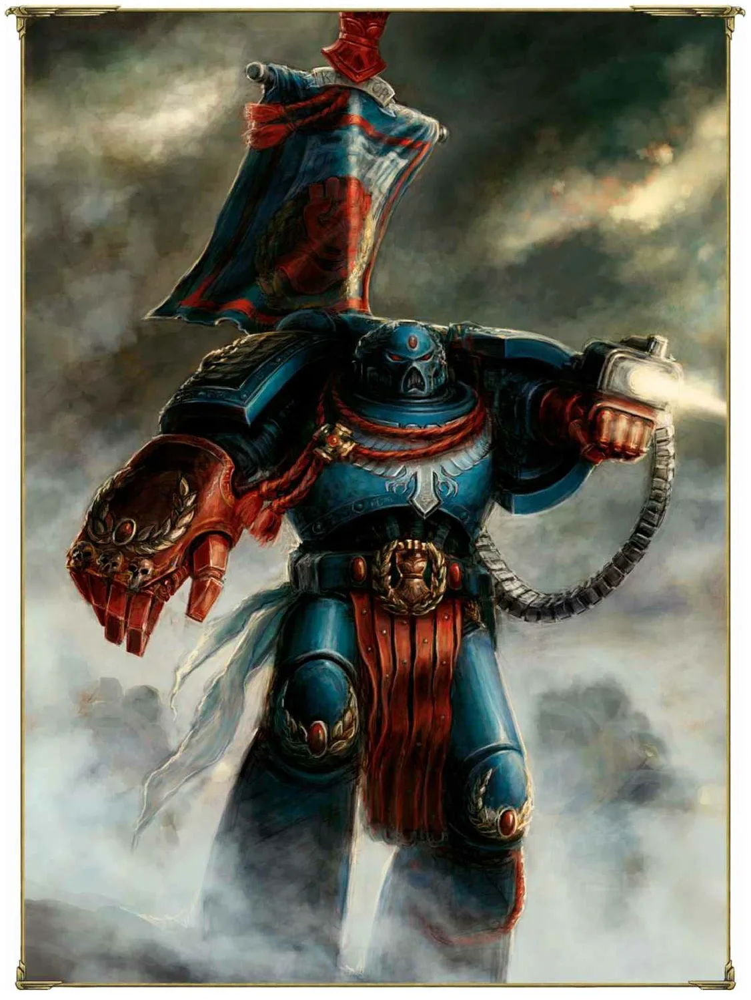
Pedro Kantor (เปโดร แคนเทอร์)
Chapter Master แห่ง Crimson Fists
Space Marines · Imperial Fists
ผู้นำ Crimson Fists ที่รอดจากการระเบิดของป้อมบน Rynn's World ระหว่างการบุกของ Orks และค่อย ๆ ฟื้นฟู Chapter ที่เหลือทหารเพียงส่วนน้อย
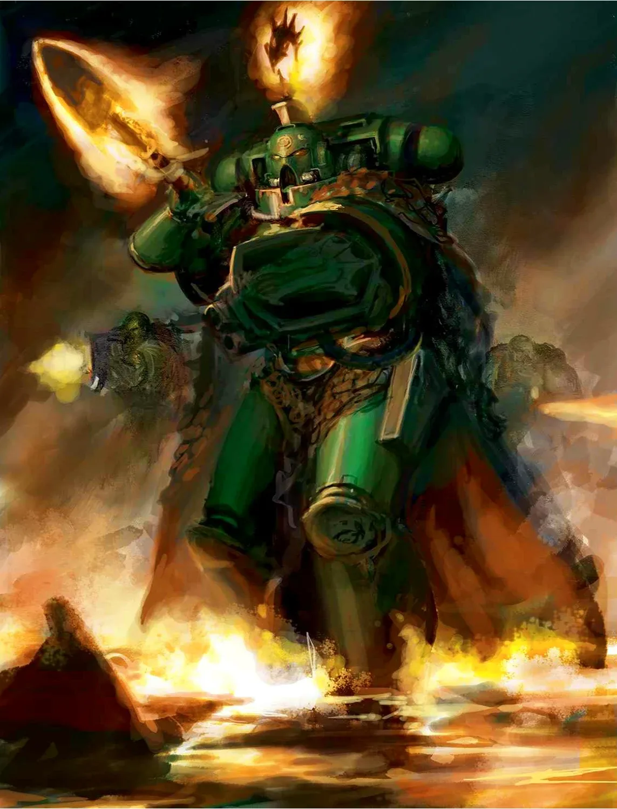
Vulkan He'stan (วัลแคน เฮ'สแตน)
Forgefather แห่ง Salamanders
Space Marines · Salamanders
ผู้ออกตามหาสมบัติ 9 ชิ้นที่ Primarch Vulkan ทิ้งไว้ (Tome of Fire) เชื่อว่าเมื่อหาครบ Vulkan จะกลับมา
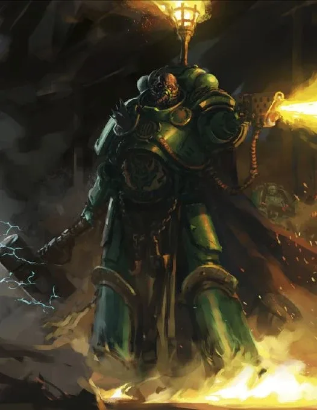
Adrax Agatone (เอแดร็กซ์ อะกาโทน)
กัปตัน 3rd Company · Master of the Arsenal
Space Marines · Salamanders
กัปตันที่ผ่าน Rubicon Primaris จนรอยแผลเป็นแห่งเกียรติยศที่สลักไว้บนผิวหายไปหมด จึงต้องเริ่มสร้างเกียรติใหม่
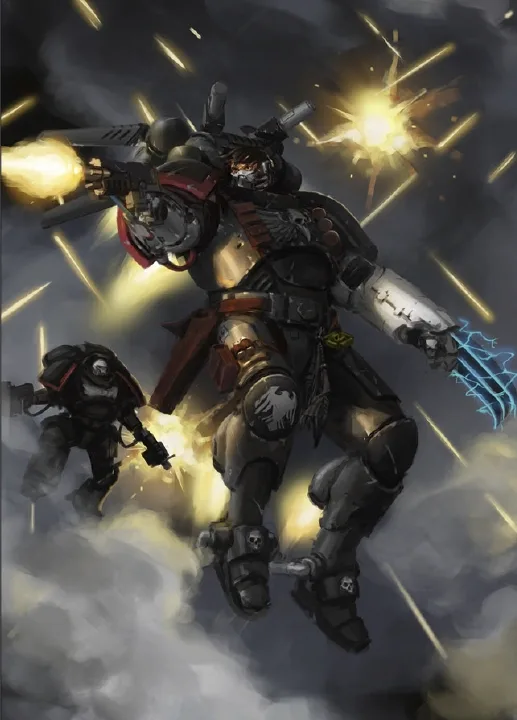
Kayvaan Shrike (เควาน ไชรก์)
อดีต Chapter Master แห่ง Raven Guard
Space Marines · Raven Guard
ผู้เชี่ยวชาญการโจมตีแบบซุ่ม ขึ้นเป็นผู้นำหลัง Chapter Master คนก่อนถูก T'au ซุ่มโจมตี ภายหลังสละตำแหน่งให้ผู้ที่เหมาะกว่าและไปนำศึกกับ Tyranids
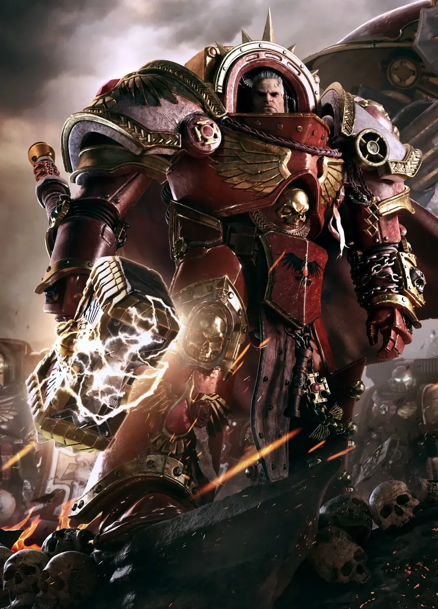
Gabriel Angelos (กาเบรียล แอนเจลอส)
Chapter Master แห่ง Blood Ravens
Space Marines
ตัวเอกของเกม Dawn of War สังหาร Chapter Master คนก่อนที่ตกเป็นเครื่องมือของ Chaos แล้วขึ้นเป็นผู้นำ Blood Ravens
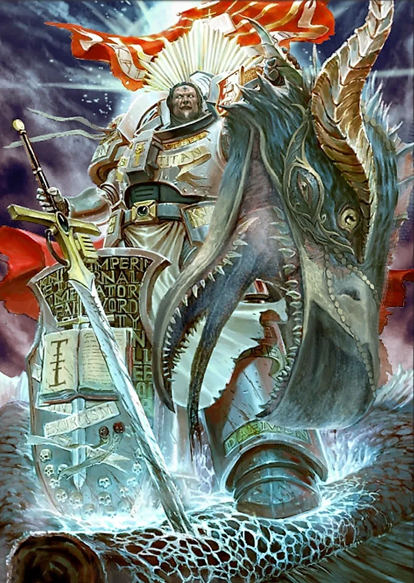
Kaldor Draigo (คาลดอร์ เดรโก)
Supreme Grand Master แห่ง Grey Knights
Grey Knights
ผู้นำ Grey Knights ที่ติดอยู่ในมิติ Chaos มาอย่างน้อยหนึ่งศตวรรษ บางครั้งกลับมาช่วยรบในโลกจริงได้ สิ่งแรกที่เขาทำเมื่อรับตำแหน่งคือสลักชื่อ Grand Master คนก่อนลงบนหัวใจของ Mortarion
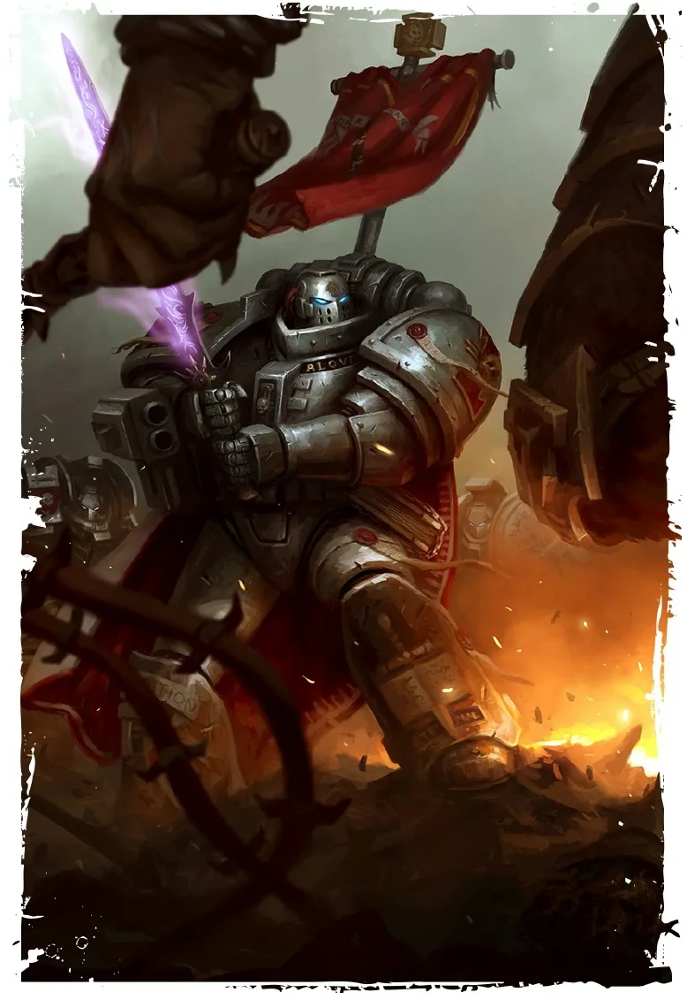
Castellan Crowe (แกร์แรน โครว์)
Castellan แห่ง Purifier Order
Grey Knights
ผู้แบกดาบปีศาจ Blade of Antwyr ที่ปีศาจพยายามล่อลวงตลอดเวลา — มีเพียงจิตใจบริสุทธิ์แบบเขาที่ต้านได้
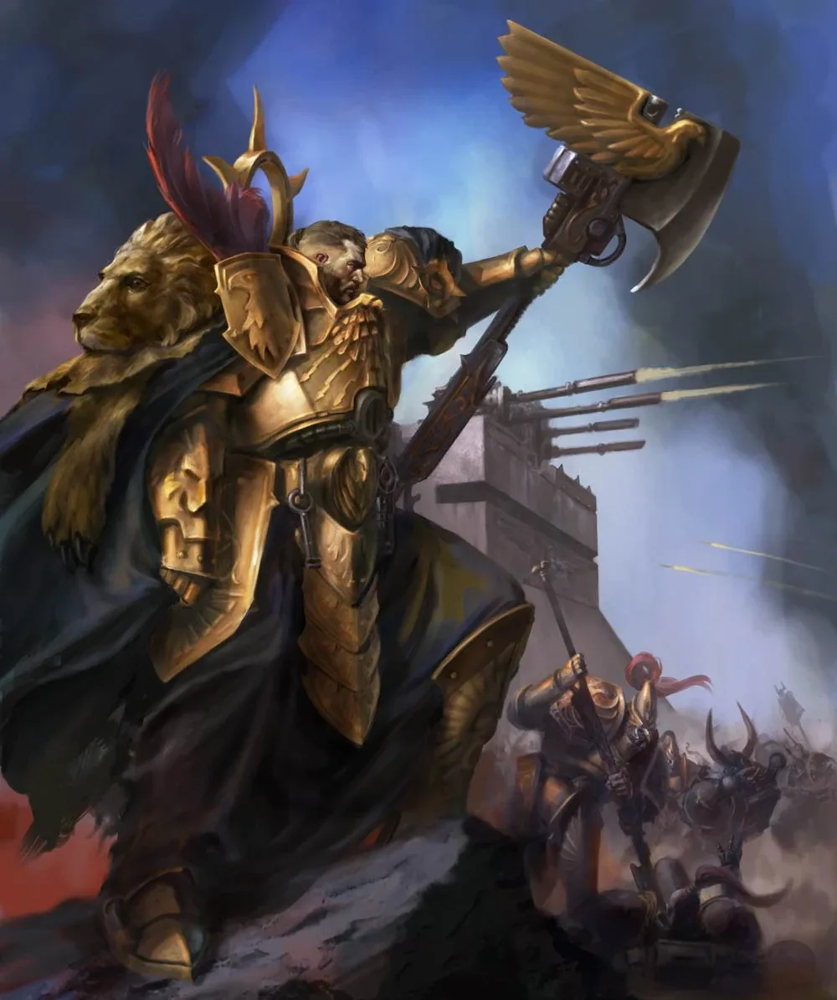
Trajann Valoris (ทราจันน์ วาโลริส)
Captain-General คนที่ 17 แห่ง Custodes
Adeptus Custodes
ผู้นำองครักษ์ทองคำของจักรพรรดิ นักรบเดี่ยวที่อันตรายที่สุดคนหนึ่งของจักรวรรดิ นำการป้องกันพระราชวังจากปีศาจของ Khorne และเป็นหนึ่งในผู้นำที่ใกล้ชิดกิลลิมัน
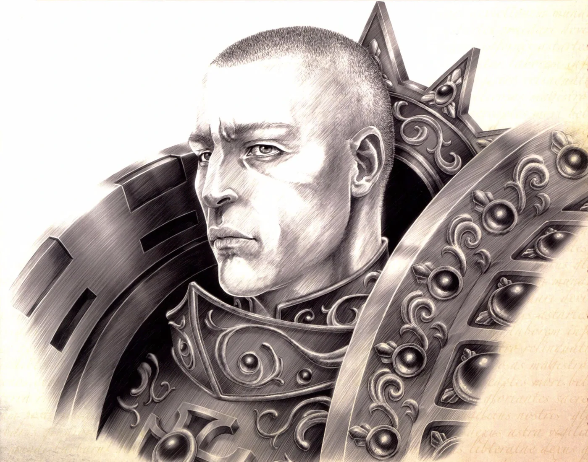
Constantin Valdor (คอนสแตนติน วัลดอร์)
Captain-General คนแรก · Shield of the Emperor
Adeptus Custodes
ผู้นำ Legio Custodes ตั้งแต่ Unification Wars จน Horus Heresy หลังจักรพรรดิถูกผนึกบน Golden Throne เขาลาออกจากตำแหน่งและไม่มีใครรู้ชะตากรรม
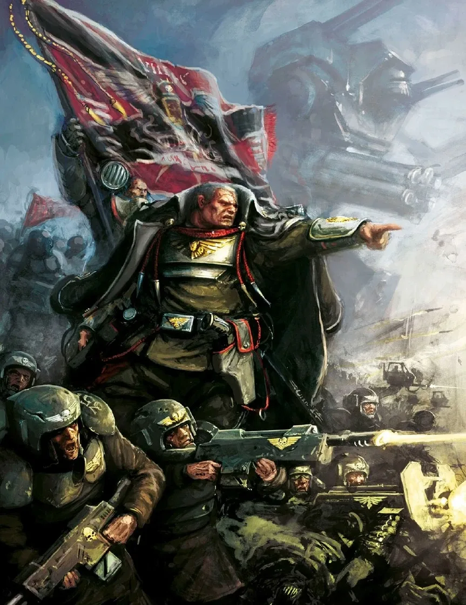
Ursarkar E. Creed (เออซาร์การ์ ครีด)
Lord Castellan แห่ง Cadia
Astra Militarum
แม่ทัพอัจฉริยะผู้ป้องกัน Cadia จาก Chaos มาหลายครั้ง ตอน Cadia ล่มสลาย เขาอยู่อพยพคนจนวินาทีสุดท้าย แล้วถูก Necron ชื่อ Trazyn 'ช่วย' ไปขังในคอลเลกชัน ลูกสาว Ursula Creed ขึ้นเป็นผู้นำแทน
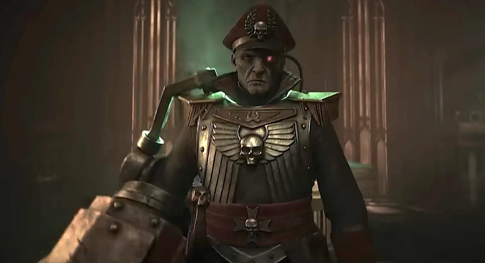
Sebastian Yarrick (เซบาสเตียน ยาร์ริก)
Commissar · Hero of Hades Hive
Astra Militarum
ผู้บัญชาการชราที่ป้องกัน Hades Hive ใน Second War for Armageddon ได้ และเป็นคู่แค้นตลอดกาลของ Ghazghkull เสียแขนในการดวลกับ Warboss Ugulhard จึงใช้กรงเล็บ Power Klaw ของ Ork ตัวนั้นแทนแขน และมีตากล 'Bale Eye' ที่ยิงเลเซอร์ได้
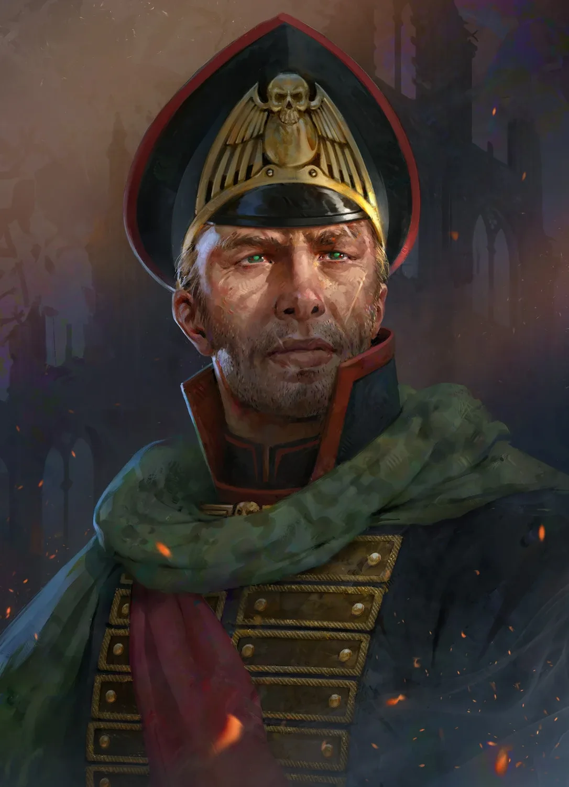
Ibram Gaunt (ไอแบรม กอนต์)
ผู้บัญชาการ Tanith First and Only (Gaunt's Ghosts)
Astra Militarum
ตัวเอกนิยายชุด Gaunt's Ghosts นำทหารจากดาว Tanith ที่ถูกทำลายไปรบใน Sabbat Worlds Crusade จนได้เลื่อนเป็นแม่ทัพ
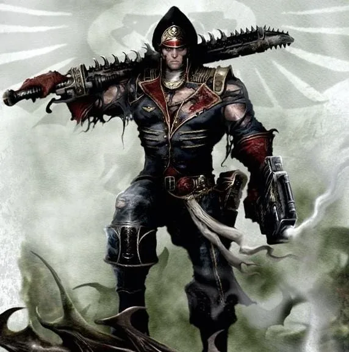
Ciaphas Cain (ไซอาฟาส เคน)
Commissar · 'วีรบุรุษจำเป็น'
Astra Militarum
ตัวเอกนิยายตลกร้ายชุด Ciaphas Cain ที่อยากเอาตัวรอด แต่มักโชคดีจนกลายเป็นวีรบุรุษ ถูกเรียกกลับมารบในช่วง Black Crusade ครั้งที่ 13 ทั้งที่อายุกว่า 200 ปี เชื่อว่าเสียชีวิตในช่วงศตวรรษแรก ๆ ของ M42
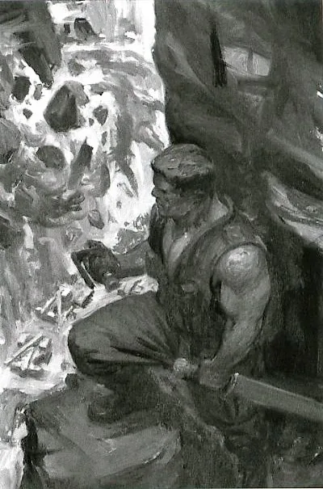
Sly Marbo (สไล มาร์โบ)
หน่วยจู่โจมเดี่ยวแห่ง Catachan
Astra Militarum
'กองทัพคนเดียว' ทหารธรรมดาที่ซุ่มยิงเก่งเทียบ Vindicare Assassin และมักโผล่มาจากที่ไม่มีใครคาดถึง
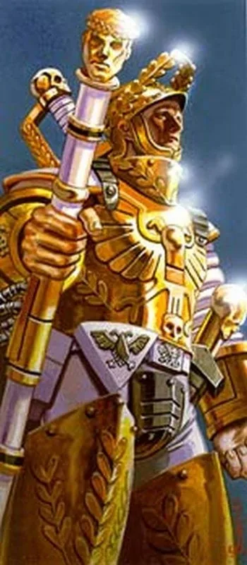
Macharius (มาคาริอัส)
Lord Commander Solar · Warmaster
Astra Militarum
แม่ทัพที่มีชื่อเสียงที่สุดของ Astra Militarum พิชิตดาวเกือบ 1,000 ดวงใน 7 ปี (Macharian Crusade) ตำนานทางการบอกว่าเขาตายด้วยน้ำมือลัทธิ Chaos
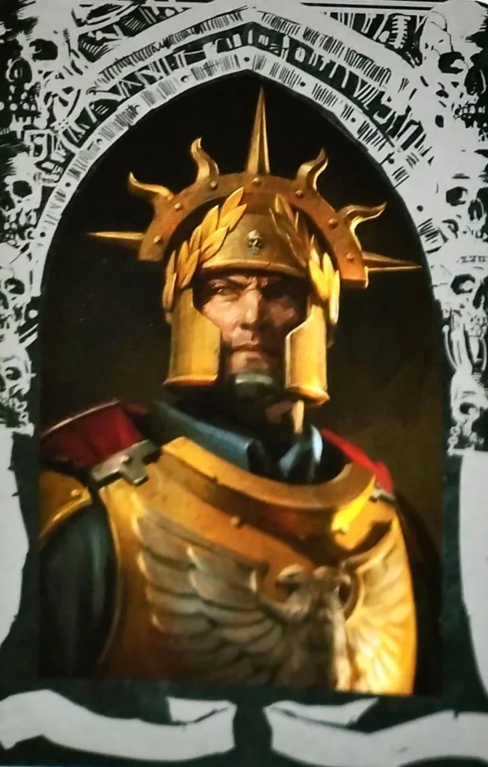
Arcadian Leontus (อาร์เคเดียน ลีออนตัส)
Lord Commander Solar คนปัจจุบัน
Astra Militarum
ผู้บัญชาการกองทัพมนุษย์ทั้งหมดใน Segmentum Solar นักยุทธศาสตร์และนักวิชาการผู้เป็นแบบอย่างของมนุษย์ธรรมดาที่ไม่ได้ดัดแปลงร่างกาย
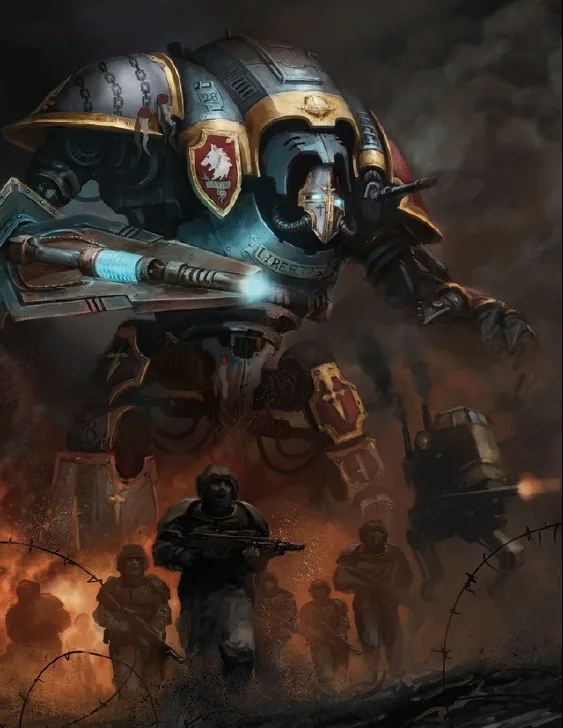
Canis Rex (คานิส เร็กซ์)
Freeblade · Chainbreaker
Imperial Knights
Sir Hekthur Cerberan ผู้บังคับหุ่น Knight Preceptor ชื่อ Canis Rex บ้านเกิดถูก Iron Warriors ยึด ขณะถูกทรมาน หุ่นของเขาตื่นขึ้นเองมาช่วย จึงออกล่าผู้ทรยศเพียงลำพัง
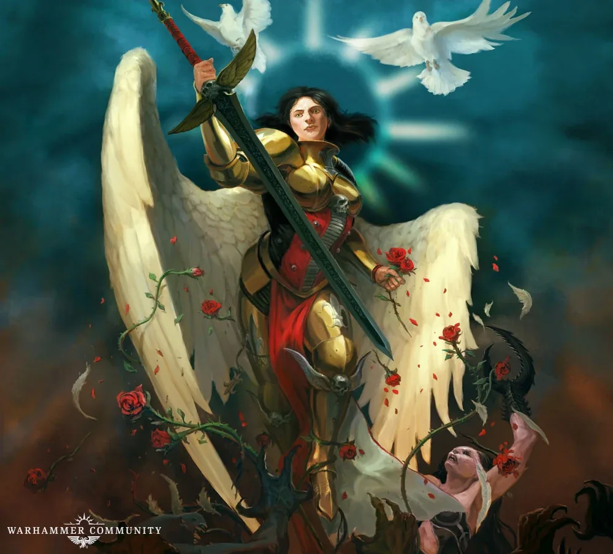
Saint Celestine (เซนต์ เซเลสทีน)
Living Saint แห่งคณะ Our Martyred Lady
Adepta Sororitas
นักบุญมีปีกที่ตายและฟื้นคืนชีพหลายครั้ง ปรากฏตัวช่วยกองทัพจักรวรรดิในยามคับขัน เช่นที่ Cadia และร่วมภารกิจชุบชีวิตกิลลิมัน
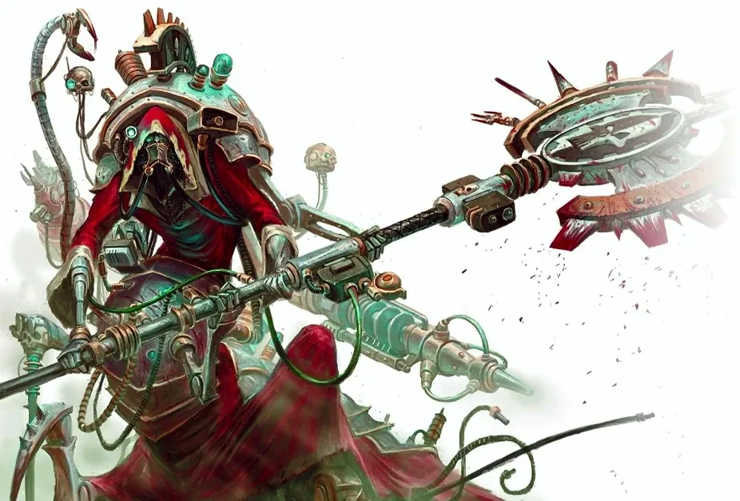
Belisarius Cawl (เบลิซาริอัส คอว์ล)
Archmagos Dominus
Adeptus Mechanicus
นักวิทยาศาสตร์อายุหมื่นปีแห่งดาวอังคาร ใช้เวลาหลายพันปีสร้าง Primaris Space Marines ตามคำสั่งลับของกิลลิมัน และร่วมกับ Ynnari ชุบชีวิตกิลลิมัน
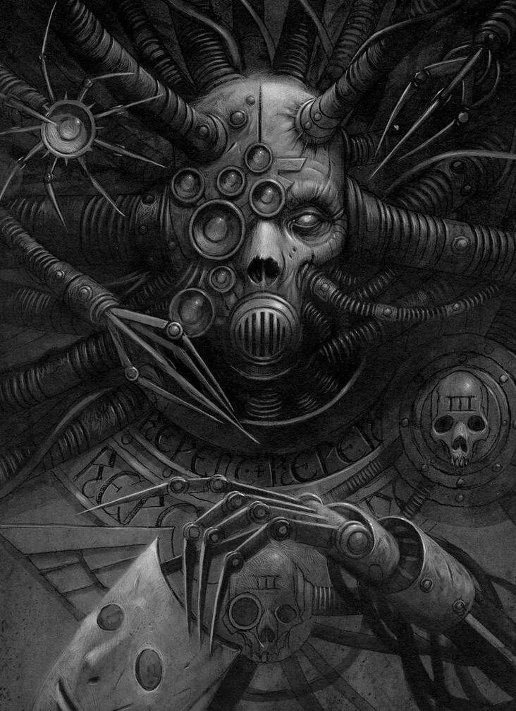
Kelbor-Hal (เคลบอร์-ฮัล)
Fabricator-General ผู้ทรยศ
Dark Mechanicum · Adeptus Mechanicus
ผู้นำดาวอังคารในยุค Heresy ผู้ทรยศเข้าข้าง Horus เพื่อแลกกับการได้ค้นคว้าเทคโนโลยีต้องห้าม ทำให้เกิด Schism of Mars และกลายเป็นผู้นำคนแรกของ Dark Mechanicum
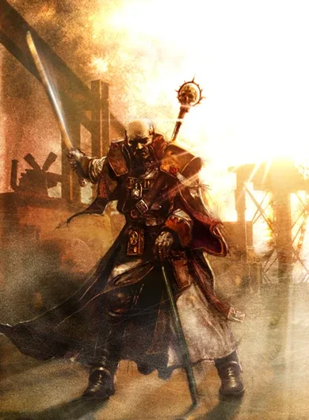
Gregor Eisenhorn (เกรเกอร์ ไอเซนฮอร์น)
Inquisitor แห่ง Ordo Xenos
Inquisition · Imperial Agents
ตัวเอกนิยายชุด Eisenhorn เริ่มจากสาย Puritan แต่ค่อย ๆ ใช้วิธีของศัตรูจนถูกประกาศเป็นคนทรยศถึงสองครั้ง — แต่ก็พิสูจน์ความภักดีได้ทุกครั้ง
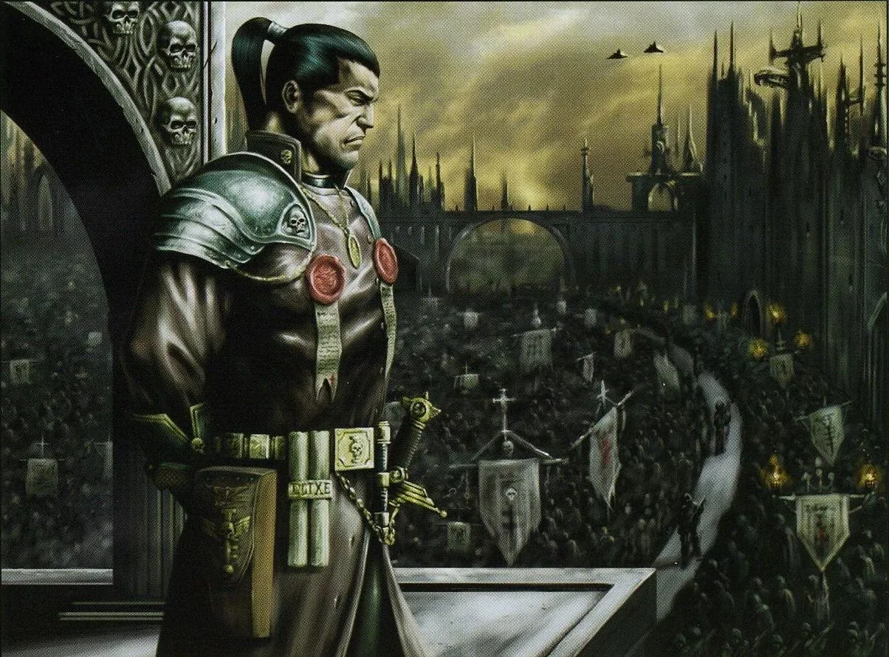
Gideon Ravenor (กิเดียน เรเวนอร์)
Inquisitor แห่ง Ordo Xenos
Inquisition · Imperial Agents
ลูกศิษย์ของ Eisenhorn ที่ถูกไฟครอกเกือบทั้งร่าง ต้องอยู่ในเก้าอี้ช่วยชีวิต Force Chair แต่พลังจิตของเขากลับแข็งแกร่งขึ้นมหาศาล
Fidus Kryptman (ฟิดัส คริปต์แมน)
Inquisitor Lord แห่ง Ordo Xenos
Inquisition · Imperial Agents
ผู้เชี่ยวชาญ Tyranids ที่ช่วยจักรวรรดิไว้ใน Third Tyrannic War ด้วยการเผาดาวทั้งแถบให้ Hive Fleet ไม่มีอาหาร (Kryptman's Void) และภายหลังล่อ Tyranids ไปปะทะ Orks ที่ Octarius
Fyodor Karamazov (ฟีโอดอร์ คารามาซอฟ)
Inquisitor Lord แห่ง Ordo Hereticus
Inquisition · Imperial Agents
ผู้พิพากษาที่นั่งบัลลังก์เดินได้ Throne of Judgement ตัดสินคนนอกรีตอย่างเปิดเผยและมักตัดสินว่า 'มีความผิด' เสมอ
Katarinya Greyfax (คาทารินยา เกรย์แฟ็กซ์)
Inquisitor แห่ง Ordo Hereticus
Inquisition · Imperial Agents
มีบทบาทสำคัญช่วงท้ายของ Cadia และในภารกิจชุบชีวิตกิลลิมัน ต่อมาได้รับคำสั่งให้ตามหาสิ่งประดิษฐ์ Eye of Night ที่อาจช่วยปิด Great Rift
Malcador the Sigillite (มัลคาดอร์ เดอะ ซิจิลไลต์)
Imperial Regent · ผู้ก่อตั้ง Inquisition และ Grey Knights
Imperium
ผู้มีพลังจิตผู้เป็นมือขวาของจักรพรรดิ ปกครอง Terra แทนเมื่อพระองค์ไม่อยู่ ในช่วง Siege of Terra เขานั่งบน Golden Throne แทนจักรพรรดิจนพลังชีวิตหมดสิ้น
Abaddon the Despoiler (อะบาดดอน เดอะ เดสพอยเลอร์)
Warmaster of Chaos · ผู้นำ Black Legion
Chaos Space Marines · Black Legion
อดีต First Captain ของ Horus ผู้นำ Black Crusade 13 ครั้ง และทำให้ Cadia ล่มสลาย เป็นแชมป์ของ Chaos Undivided ที่ยิ่งใหญ่ที่สุด ประกาศตัวเป็น Warmaster of the Imperium Nihilus
Haarken Worldclaimer (ฮาร์เคน เวิลด์เคลมเมอร์)
ผู้ประกาศแห่ง Abaddon
Chaos Space Marines · Black Legion
Raptor แห่ง Black Legion ผู้ถูกส่งไปประกาศต่อดาว Vigilus ว่าจะล่มสลายภายใน 80 วัน
Khârn the Betrayer (คาร์น เดอะ บีเทรเยอร์)
แชมป์แห่ง Khorne
Chaos Space Marines · World Eaters
อดีตกัปตันผู้เป็นคนเดียวที่ Angron ฟัง ที่ Skalathrax เขาเผาที่หลบภัยจนฆ่าได้ทั้งศัตรูและพวกเดียวกัน จึงได้ฉายา 'ผู้ทรยศ' ถือขวานโซ่ Gorechild
Typhus (ไทฟัส)
Herald of Nurgle · Lord of the 1st Plague Company
Chaos Space Marines · Death Guard
เดิมคือ Calas Typhon First Captain ของ Death Guard ผู้พา Legion ติดอยู่ใน Warp จนตกเป็นของ Nurgle ร่างของเขาเป็นรังของฝูงแมลงวันปีศาจ Destroyer Hive
Ahzek Ahriman (อาเซก อาห์ริมาน)
จอมเวทแห่ง Thousand Sons
Chaos Space Marines · Thousand Sons
อดีต Chief Librarian ผู้ร่ายคาถา Rubric เพื่อหยุดการกลายพันธุ์ แต่กลับเปลี่ยนพี่น้องเป็นฝุ่นในเกราะ ถูก Magnus เนรเทศ และตามหาความรู้เพื่อแก้ไขมานับหมื่นปี
Lucius the Eternal (ลูเซียส ดิ อิเทอร์นัล)
แชมป์แห่ง Slaanesh
Chaos Space Marines · Emperor's Children
นักดาบที่หลงใหลการต่อสู้ ใครที่ฆ่าเขาแล้วรู้สึกภูมิใจแม้เพียงนิด จะค่อย ๆ กลายร่างเป็น Lucius จึงเกือบฆ่าไม่ตาย
Fabius Bile (เฟเบียส ไบล์)
Clone Lord · อดีต Chief Apothecary
Chaos Space Marines · Emperor's Children
นักวิทยาศาสตร์บ้าแห่ง Emperor's Children ผู้ทดลองพันธุกรรมเพื่อสร้างมนุษย์ที่เหนือกว่าจักรพรรดิเคยสร้าง ไม่ภักดีต่อใครนอกจากงานของตัวเอง
Huron Blackheart (ฮูรอน แบล็กฮาร์ต)
ผู้นำ Red Corsairs · Tyrant of Badab
Chaos Space Marines
อดีต Chapter Master ของ Astral Claws ผู้ก่อกบฏใน Badab War (901–912.M41) บาดเจ็บสาหัสแล้วหนีเข้า Maelstrom ตั้งกองโจรสลัด Red Corsairs
Kor Phaeron (คอร์ แฟรอน)
Dark Cardinal แห่ง Word Bearers
Chaos Space Marines · Word Bearers
พ่อบุญธรรมของ Lorgar บน Colchis ผู้นำลัทธิลับที่บูชาเทพเก่า ช่วยนำ Legion สู่ Chaos และนำการบุก Talledus ในยุคปัจจุบัน
Erebus (เอเรบัส)
Dark Apostle · สถาปนิกแห่ง Heresy
Chaos Space Marines · Word Bearers
อดีต First Chaplain ของ Word Bearers ผู้วางแผนให้ Horus บาดเจ็บด้วยมีดต้องสาปบน Davin และหันไปหา Chaos เป็นผู้จุดชนวน Horus Heresy
Be'lakor (เบ'ลากอร์)
Daemon Prince คนแรก · Dark Master
Chaos Daemons
มนุษย์คนแรกที่ได้เป็น Daemon Prince จากเทพทั้งสี่ร่วมกัน เล่นเกมของตัวเองมาหลายหมื่นปี และมีบทบาทในการเปิดทางให้ปีศาจบุกเข้าสู่โลกจริง
Vashtorr the Arkifane (วัชทอร์ ดิ อาร์กิเฟน)
Master of the Soul Forges
Chaos Daemons
ปีศาจผู้ปกครองโรงหลอมอาวุธปีศาจใน Warp ไม่ขึ้นกับเทพองค์ใด เกิดจากความหมกมุ่นในเทคโนโลยีของมนุษย์ ร่วมมือกับ Abaddon ในเหตุการณ์ Arks of Omen
Eldrad Ulthran (เอลดราด อัลธรัน)
Farseer แห่ง Craftworld Ulthwé
Aeldari
นักพยากรณ์อายุกว่าหมื่นปี ผู้ชักใยเหตุการณ์เพื่อช่วยชาว Aeldari — เชื่อกันว่าเป็นผู้จุดชนวน Second War for Armageddon เพื่อรักษาชีวิต Aeldari นับหมื่น
Yvraine (อีเวรน)
ศาสดาแห่ง Ynnead · Daughter of Shades
Aeldari · Ynnari
อดีตนักสู้ในสนามประลองของ Commorragh ผู้ตายและฟื้นคืนชีพด้วยพลังของเทพแห่งความตาย ก่อตั้ง Ynnari และช่วยชุบชีวิตกิลลิมัน
Asurmen (อะซูร์เมน)
Phoenix Lord คนแรก · Hand of Asuryan
Aeldari
ผู้ก่อตั้งวิถีนักรบ Aspect Warriors และนักรบ Dire Avengers เป็น Phoenix Lord ที่เก่าแก่ที่สุด ตายแล้วกลับมาได้เรื่อย ๆ
Jain Zar (เจน ซาร์)
Phoenix Lord แห่ง Howling Banshees
Aeldari
ผู้ก่อตั้งนักรบหญิง Howling Banshees ผู้ใช้เสียงกรีดร้องทำให้ศัตรูชะงัก ถูกเรียกว่า 'พายุแห่งความเงียบ'
Maugan Ra (เมาแกน รา)
Phoenix Lord แห่ง Dark Reapers
Aeldari
ผู้ก่อตั้งนักรบ Dark Reapers ผู้ถืออาวุธยิงหนัก ได้ฉายาว่า 'ผู้เก็บเกี่ยววิญญาณ'
Illic Nightspear (อิลลิก ไนต์สเปียร์)
Ranger แห่ง Craftworld Alaitoc
Aeldari
นักแม่นปืนผู้เดินบนเส้นทาง Outcast มาหลายพันปี รู้จัก Webway ดีจนโผล่ได้ทุกที่
Asdrubael Vect (แอสดรูเบล เว็กต์)
Supreme Overlord แห่ง Commorragh
Drukhari
จากทาสสู่ผู้ปกครองสูงสุดของเมืองมืด อาจมีอายุมากกว่ายุค The Fall เป็นผู้สร้าง Commorragh ให้กลายเป็นมหานครแห่งความชั่วร้าย
Lelith Hesperax (เลลิธ เฮสเปอแร็กซ์)
แชมป์สนามประลองแห่ง Commorragh
Drukhari
Succubus ผู้ไม่เคยแพ้ในสนามประลอง ต่อสู้แทบไม่สวมเกราะเพื่ออวดฝีมือ เป็นคนโปรดของ Vect
Drazhar (ดราซาร์)
Master of Blades แห่ง Incubi
Drukhari
แชมป์นักดาบของ Incubi ที่เชื่อกันว่าเคยเป็น Arhra — Phoenix Lord ผู้ทรยศแห่ง Striking Scorpions
Urien Rakarth (ยูเรียน ราการ์ธ)
Master Haemonculus
Drukhari
ช่างปั้นเนื้อหนังผู้เป็นอัจฉริยะวิปริต ตายแล้วถูกชุบชีวิตนับครั้งไม่ถ้วน สนใจเพียงการทดลองกับร่างกายที่ยิ่งใหญ่ที่สุด
Ghazghkull Mag Uruk Thraka (กาซกูล แม็ก อูรุก แธรกา)
ศาสดาแห่ง Waaagh! · Beast of Armageddon
Orks
Ork ที่มีอิทธิพลที่สุดในกาแล็กซี หลังถูกยิงหัวแล้วผ่าตัดเสริมเหล็ก เขาเริ่มได้ยิน 'นิมิต' จาก Gork และ Mork บุก Armageddon หลายครั้ง ถูกตัดหัวที่ Krongar แต่ถูกต่อกลับมา และตอนนี้กลับมาบุก Armageddon อีก
Mad Dok Grotsnik (แมด ด็อก กร็อตสนิก)
Painboy (หมอ Ork) ประจำตัว Ghazghkull
Orks
หมอเถื่อนที่ชอบ 'ผ่าตัด' ทุกอย่าง เป็นผู้เสริมกะโหลกเหล็กให้ Ghazghkull และต่อหัวเขาเข้ากับร่างใหม่หลัง Krongar
Boss Snikrot (บอส สนิกร็อต)
หัวหน้าหน่วยคอมมานโด Red Skull Kommandoz
Orks
Ork ที่ซุ่มเงียบผิดวิสัย Ork ในป่าของ Armageddon แม้แต่ทหารนักล่า Ork ยังกลัวเขา
Szarekh (ซาเรค)
The Silent King
Necrons
ผู้ปกครองสุดท้ายของ Necrontyr ผู้ยอมรับข้อเสนอของ C'tan จนเผ่าพันธุ์กลายเป็นหุ่นไร้วิญญาณ เขาเนรเทศตัวเองไปในห้วงอวกาศระหว่างกาแล็กซี และกลับมาในยุคปัจจุบันเพื่อรวมอาณาจักร
Imotekh the Stormlord (อิโมเทค เดอะ สตอร์มลอร์ด)
Phaeron แห่ง Sautekh Dynasty
Necrons
อาจเป็น Necron Overlord ที่แข็งแกร่งที่สุด ปกครอง Tomb World ราว 80 ดวง นักยุทธศาสตร์อัจฉริยะผู้หยิ่งทะนง
Trazyn the Infinite (เทรซิน ดิ อินฟินิท)
นักสะสมแห่ง Solemnace Galleries
Necrons
Necron ผู้หลงใหลการสะสม 'ของโบราณ' จากทั่วกาแล็กซี รวมถึงผู้คน — เช่น Lord Castellan Creed ที่ถูกเขาจับไปขัง ฆ่าไม่ตายเพราะย้ายจิตไปร่างสำรองได้
Orikan the Diviner (โอริกัน เดอะ ดิไวเนอร์)
Cryptek ผู้ควบคุมเวลา
Necrons
นักโหราศาสตร์ของ Silent King ในยุคโบราณ เป็นคนเดียวที่คัดค้านการแลกร่างกับ C'tan เพราะมองเห็นว่าจะจบด้วยหายนะ
Illuminor Szeras (อิลลูมินอร์ เซราส)
Cryptek ผู้สร้าง Biotransference
Necrons
อัจฉริยะผู้ทำให้การย้ายจิต Necrontyr สู่ร่างโลหะเป็นจริง ถูกเกลียดชังทั่วเผ่า และหวังจะยกตัวเองขึ้นเป็นเทพแบบ C'tan
Aun'Va (ออน'วา)
Ethereal Supreme (อดีตผู้นำ)
T'au Empire
ผู้นำสูงสุดของ T'au Empire ในช่วงขยายอาณาจักรครั้งใหญ่ เป็นเหมือนบุคคลศักดิ์สิทธิ์ของชาว T'au ถูกลอบสังหารหลังสงครามกับจักรวรรดิ
Commander Shadowsun (คอมมานเดอร์ ชาโดว์ซัน)
Supreme Commander แห่งวรรณะ Fire
T'au Empire
ผู้บัญชาการ Third Sphere Expansion และปัจจุบันนำ Fifth Sphere Expansion นักยุทธศาสตร์ที่ใช้การซุ่มและชุดรบล่องหน
Commander Farsight (คอมมานเดอร์ ฟาร์ไซต์)
ผู้นำ Farsight Enclaves
T'au Empire
วีรบุรุษแห่ง Vior'la ผู้ถือดาบโบราณ Dawn Blade แยกตัวจาก T'au Empire และปกครองดินแดนของตัวเอง ทำให้ถูกมองว่าเป็นทั้งวีรบุรุษและคนทรยศ
The Swarmlord (เดอะ สวอร์มลอร์ด)
ร่างบัญชาการของ Hive Mind
Tyranids
สิ่งมีชีวิตที่ Hive Mind ใช้คุมสงครามโดยตรง ถูกฆ่าเมื่อไรจิตของมันจะกลับไปรวมกับ Hive Mind แล้วเกิดใหม่ในศึกถัดไป
Old One Eye (โอลด์ วันอาย)
Carnifex ในตำนาน
Tyranids
Carnifex ที่ฟื้นตัวจากบาดแผลสาหัสได้ มีข่าวลือว่าถูกฆ่าไปแล้วกว่าสิบครั้ง ครั้งแรกถูกพบในยุค Behemoth ที่ Ultramar
Deathleaper (เดธลีปเปอร์)
นักฆ่าของ Hive Fleet Leviathan
Tyranids
Lictor พิเศษที่ถูกสร้างมาเพื่อสร้างความหวาดกลัว ซุ่มสังหารผู้นำก่อนที่ Hive Fleet จะมาถึง
Ûthar the Destined (อูธาร์ เดอะ เดสทินด์)
Kâhl แห่ง Greater Thurian League
Leagues of Votann
วีรบุรุษของชาว Kin ผู้ถือดาบพลาสมา Blade of the Ancestors ประเมินศัตรูได้รวดเร็วและเด็ดขาด
The Emperor of Mankind (จักรพรรดิแห่งมนุษยชาติ)
ผู้ก่อตั้งจักรวรรดิมนุษย์
Primarch & จักรพรรดิ
มนุษย์ผู้มีพลังจิตมหาศาลที่รวม Terra สร้าง Primarch และ Space Marines แล้วนำ Great Crusade ถูก Horus ทำร้ายสาหัสจนต้องประทับบน Golden Throne มาหมื่นปี ปัจจุบันถูกบูชาเป็นพระเจ้า
Lion El'Jonson (ไลออน เอล'จอนสัน)
Primarch แห่ง Dark Angels (ผู้ภักดี)
Primarch & จักรพรรดิ · Dark Angels
The Lion · The First — อ่านเรื่องราวเต็มตั้งแต่กำเนิดจนถึงสถานะปัจจุบันได้ในหน้า Primarch
Fulgrim (ฟูลกริม)
Primarch แห่ง Emperor's Children (ผู้ทรยศ)
Primarch & จักรพรรดิ · Emperor's Children
The Phoenician — อ่านเรื่องราวเต็มตั้งแต่กำเนิดจนถึงสถานะปัจจุบันได้ในหน้า Primarch
Perturabo (เพอร์ทูราโบ)
Primarch แห่ง Iron Warriors (ผู้ทรยศ)
Primarch & จักรพรรดิ · Iron Warriors
Lord of Iron — อ่านเรื่องราวเต็มตั้งแต่กำเนิดจนถึงสถานะปัจจุบันได้ในหน้า Primarch
Jaghatai Khan (จาคาไต ข่าน)
Primarch แห่ง White Scars (ผู้ภักดี)
Primarch & จักรพรรดิ · White Scars
The Warhawk · Great Khan — อ่านเรื่องราวเต็มตั้งแต่กำเนิดจนถึงสถานะปัจจุบันได้ในหน้า Primarch
Leman Russ (เลแมน รัส)
Primarch แห่ง Space Wolves (ผู้ภักดี)
Primarch & จักรพรรดิ · Space Wolves
The Wolf King — อ่านเรื่องราวเต็มตั้งแต่กำเนิดจนถึงสถานะปัจจุบันได้ในหน้า Primarch
Rogal Dorn (โรกัล ดอร์น)
Primarch แห่ง Imperial Fists (ผู้ภักดี)
Primarch & จักรพรรดิ · Imperial Fists
Praetorian of Terra — อ่านเรื่องราวเต็มตั้งแต่กำเนิดจนถึงสถานะปัจจุบันได้ในหน้า Primarch
Konrad Curze (คอนราด เคิร์ซ)
Primarch แห่ง Night Lords (ผู้ทรยศ)
Primarch & จักรพรรดิ · Night Lords
The Night Haunter — อ่านเรื่องราวเต็มตั้งแต่กำเนิดจนถึงสถานะปัจจุบันได้ในหน้า Primarch
Sanguinius (แซงกวิเนียส)
Primarch แห่ง Blood Angels (ผู้ภักดี)
Primarch & จักรพรรดิ · Blood Angels
The Great Angel — อ่านเรื่องราวเต็มตั้งแต่กำเนิดจนถึงสถานะปัจจุบันได้ในหน้า Primarch
Ferrus Manus (เฟอร์รัส มานุส)
Primarch แห่ง Iron Hands (ผู้ภักดี)
Primarch & จักรพรรดิ · Iron Hands
The Gorgon — อ่านเรื่องราวเต็มตั้งแต่กำเนิดจนถึงสถานะปัจจุบันได้ในหน้า Primarch
Angron (แองกรอน)
Primarch แห่ง World Eaters (เดิม War Hounds) (ผู้ทรยศ)
Primarch & จักรพรรดิ · World Eaters
The Red Angel — อ่านเรื่องราวเต็มตั้งแต่กำเนิดจนถึงสถานะปัจจุบันได้ในหน้า Primarch
Roboute Guilliman (โรบูท์ กิลลิมัน)
Primarch แห่ง Ultramarines (ผู้ภักดี)
Primarch & จักรพรรดิ · Ultramarines
The Avenging Son — อ่านเรื่องราวเต็มตั้งแต่กำเนิดจนถึงสถานะปัจจุบันได้ในหน้า Primarch
Mortarion (มอร์ทาเรียน)
Primarch แห่ง Death Guard (เดิม Dusk Raiders) (ผู้ทรยศ)
Primarch & จักรพรรดิ · Death Guard
The Death Lord — อ่านเรื่องราวเต็มตั้งแต่กำเนิดจนถึงสถานะปัจจุบันได้ในหน้า Primarch
Magnus the Red (แมกนัส เดอะ เรด)
Primarch แห่ง Thousand Sons (ผู้ทรยศ)
Primarch & จักรพรรดิ · Thousand Sons
The Crimson King — อ่านเรื่องราวเต็มตั้งแต่กำเนิดจนถึงสถานะปัจจุบันได้ในหน้า Primarch
Horus Lupercal (ฮอรัส ลูเพอร์คัล)
Primarch แห่ง Luna Wolves → Sons of Horus → Black Legion (ผู้ทรยศ)
Primarch & จักรพรรดิ · Black Legion
The Warmaster — อ่านเรื่องราวเต็มตั้งแต่กำเนิดจนถึงสถานะปัจจุบันได้ในหน้า Primarch
Lorgar Aurelian (ลอร์การ์ ออเรเลียน)
Primarch แห่ง Word Bearers (เดิม Imperial Heralds) (ผู้ทรยศ)
Primarch & จักรพรรดิ · Word Bearers
The Urizen — อ่านเรื่องราวเต็มตั้งแต่กำเนิดจนถึงสถานะปัจจุบันได้ในหน้า Primarch
Vulkan (วัลแคน)
Primarch แห่ง Salamanders (ผู้ภักดี)
Primarch & จักรพรรดิ · Salamanders
The Promethean — อ่านเรื่องราวเต็มตั้งแต่กำเนิดจนถึงสถานะปัจจุบันได้ในหน้า Primarch
Corvus Corax (คอร์วัส คอแรกซ์)
Primarch แห่ง Raven Guard (ผู้ภักดี)
Primarch & จักรพรรดิ · Raven Guard
The Raven Lord — อ่านเรื่องราวเต็มตั้งแต่กำเนิดจนถึงสถานะปัจจุบันได้ในหน้า Primarch
Alpharius Omegon (อัลฟาริอุส โอเมกอน)
Primarch แห่ง Alpha Legion (ผู้ทรยศ)
Primarch & จักรพรรดิ · Alpha Legion
The Hydra · ฝาแฝด — อ่านเรื่องราวเต็มตั้งแต่กำเนิดจนถึงสถานะปัจจุบันได้ในหน้า Primarch
ไม่พบตัวละครที่ตรงกับเงื่อนไข — ลองล้างตัวกรองหรือพิมพ์ชื่อภาษาอังกฤษ
02หมายเหตุ
สถานะอ้างอิงเนื้อเรื่องล่าสุดที่ Games Workshop เผยแพร่ (ถึงยุค 11th Edition) บางคนเป็นตัวละครจากนิยาย (เช่น Gaunt, Cain, Eisenhorn) และบางคนเรื่องราวยังไม่ชัดเจน จึงระบุว่า 'ไม่แน่ชัด'
อ่านเรื่องของ Primarch แบบละเอียดที่ จักรพรรดิและ Primarch และเนื้อเรื่องของแต่ละทัพที่ เนื้อเรื่องรายทัพ